Summary
Evolution works: a genetic algorithm found better ways for a small AI to write down complex systems than the best format we could take from published research, and it did so twice, each time confirmed on items no design had been chosen on. The best hand-made starting format, FACTS, was beaten in round 3 by Tawny Gibbon and Tawny Gibbon in round 6 by Zesty Lynx. [TO FILL at the end of the run: further champions.]
The question. Before an AI can explain, troubleshoot or build a system, it needs an accurate picture of it: its parts, values, rules and timing. This experiment makes that picture explicit: the model writes the system down as notes, then answers from its notes alone. Frontier models are generally better at untangling messy descriptions but cost far more (GPT-6's flagship is about 100 times Luna's price per output token), and there is some evidence that smaller models are more sensitive to how information is laid out. Can the right format make a small model markedly more accurate, and can evolution find that format?
What we did. We started from nine formats taken from research and from tools AI already uses, treated each as a genome of nine genes, and bred about 20 children a round. A designer AI (Claude Opus) wrote the children; a small model (GPT-6 Luna) tested every one end to end: it writes a system down without seeing the questions, then answers from its own notes alone. A child became champion only after beating the reigning champion on fresh items and then again on brand-new ones.
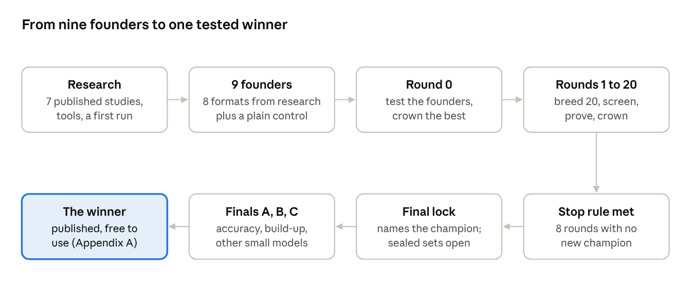
What we found.
Two confirmed improvements over the best research-based format: FACTS (0.625 on the main test set) to Tawny Gibbon (0.669) to Zesty Lynx (0.682).
The winning changes were about answering, not note-taking. Both champions kept the same notes layout and changed how the model answers from it: find the part of the system the question is about, collect its facts, compute, check.
Every bigger redesign failed. Five designs that added sections or pre-worked results to the notes were cut early.
Complexity is the limit. Accuracy falls as systems grow: FACTS answered 83% correctly on one system and 52% on eight tangled ones. [TO FILL: the final champion's figures.]
Honest testing matters. Two strong-looking challengers lost their lead on fresh items; the safeguards stopped them being crowned.
Why it matters. The winning format is free, needs no training and works in any chat AI. The method matters more than the format: a rule-bound way to find and prove the best format for any model, run again whenever the models change. Three early-indicator tests (section 08) check whether the result carries over to bigger models, to memory compression and to building apps.
Cost. Two consumer AI subscriptions and a few dollars of pay-per-use calls, on one laptop.
01The problem: an AI is only as good as its notes
Most systems people want help with exist only as words. A hospital process, a farm, a supply chain or an app not yet built lives in documents, emails and rough specs. Whatever an AI is asked next, from a what-if to writing the software, it works from its own understanding of that description. If its working notes drop a rule, blur a timing or merge two parts, every later answer inherits the mistake.
The format of those notes is usually chosen by habit: plain prose, a bulleted spec, a JSON schema. Published work shows the choice matters: the same model can swing widely in accuracy with nothing changed but the format, and forcing rigid structure can hurt reasoning (He et al., 2025; Tam et al., 2024). Nobody had searched the space of formats systematically, for complex systems, and tested the result honestly.
Small models are where this matters most. Frontier models can often reason through a messy description, but cost too much for everyday, high-volume use. The builder here, GPT-6 Luna, is the smallest and cheapest tier of the GPT-6 range: about 100 times cheaper per output token than the GPT-6 flagship. Small models are also more sensitive to how information is laid out.
Hypothesis. An evolved format lets a small, inexpensive model understand complex systems more accurately than plain-language notes, where understanding means answering questions about a system from its own written notes. The advantage holds on unseen items, grows with the size of the system, holds when a system is built up over several turns, and carries over to other small models.
How understanding is measured. Understanding can only be scored against answers known to be right. So every test system is first built as a small simulation in code, and the description the AI reads is written from it, with the mess of real writing added on purpose: distractors, mixed units, varied wording, rules out of order. The AI writes its notes, the description is taken away, and it answers from the notes alone. Because the system was simulated, every correct answer is computed exactly, and no AI ever sees an answer key.
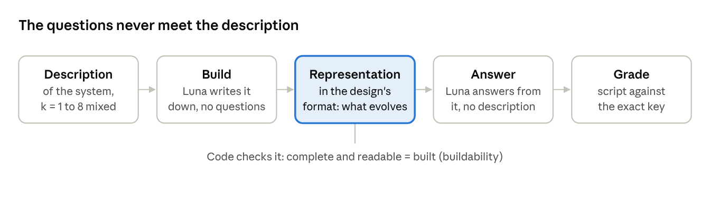
Only the notes cross from building to answering, so a design scores well only if what it writes down captures the system.
02The idea: let the format evolve
Rather than design the best format by hand, we bred it. Each way of writing a system down is treated as a creature with nine genes: how the notes are laid out, how they are built, how the model answers from them, worked examples and a few numeric budgets. Two creatures with the same genes are the same design. Every creature is drawn as a pixel animal whose body parts come from its genes, so a family tree of formats can be read at a glance.
| Gene | What it controls |
|---|---|
core | The layout of the notes: prose, named sections, state machine, equations, rules |
guidance | Free-text instructions on how to write the notes |
answering | Free-text instructions on how to answer questions from the notes |
build protocol | Order of work: one shot, step by step with checks, template first |
examples | Worked examples shown to the model |
schema, tools, query layer | Fields to declare, how build tools report errors, questions the notes can be asked through tools |
numeric | Budgets: turns, retries, how often to check |
Nine founders started the race, each one idea from published research or from formats AI tools already use. The best of them, FACTS (one fact per bullet, in key-value form, under THINGS, VALUES, RULES, LINKS and TIMING), became the first champion. A plain-language control, A0P, is the baseline everything must beat.
| Founder | The idea | Score on the main set |
|---|---|---|
FACTS (starting champion) | Compact key-value facts under five headings (Dai et al., 2024) | 0.625 |
STATES | A state machine: parts, states, events, transitions (Kim and Schuster, 2023) | 0.555 |
SEC_A1 | Tagged bullets separating stated, derived and assumed facts | 0.544 |
SPEC | An EARS build spec: WHEN trigger, THE SYSTEM SHALL respond | 0.520 |
A0P (control) | Plain-language notes | 0.512 |
ONT_LOOSE | Controlled-English fact sentences plus free notes | 0.494 |
A5 | Facts and if-then rules a tool can query | 0.464 |
SEC_FLOW | Purpose, parts, flows, rules, timeline | 0.449 |
G1C3 | Named variables and equations that tools compute (Gao et al., 2023) | 0.437 |
FACTS beat plain language by +0.113 (95% range +0.062 to +0.167) before any evolution: format alone is worth a lot. The question for the run was whether evolution could improve on the best format research had to offer.
Three AIs, three jobs. A designer AI (Claude Opus) writes the children. A small model (GPT-6 Luna) builds notes and answers in every test, and is the only model scored. A grader (DeepSeek V4.1 Flash) marks the 10 hand-written real-world items, whose answers are open prose; everything else is marked by script. Opus designs because writing children is the hardest reasoning job and it is never scored; DeepSeek grades because, in a test before the run, it agreed best with an Opus referee (0.92) at the lowest cost.
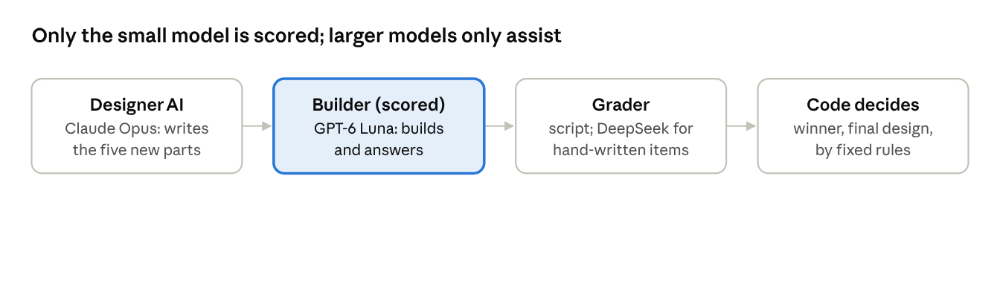
03How the engine works
Every round breeds about 20 children from the best designs so far, races them against the champion, and crowns at most one. The engine runs unattended: once started, it breeds, tests, proves and crowns by its own locked rules.
Three kinds of children.
Fix (30%). The designer AI reads the parent's report card: its score by system size and, from eight practice items that never count, the questions it got wrong with its own notes beside them. It changes one gene and says why in one line.
Combine (35%). The designer takes each gene whole from whichever parent is stronger at it, with a reason per gene. Half these pair near-winners from a shelf of designs that came close to the champion.
Big idea (35%). A redesign of up to three genes, or a brand-new way of answering from the notes.
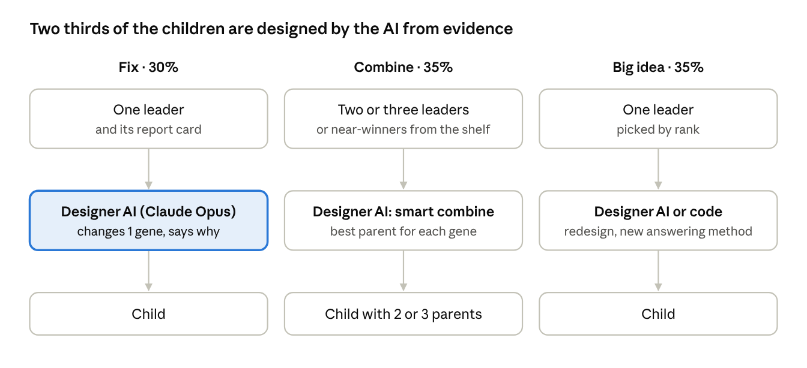
About one child in five comes from a family other than the leader's, and one place in the full test is held for another family, so the pool does not collapse onto one line.
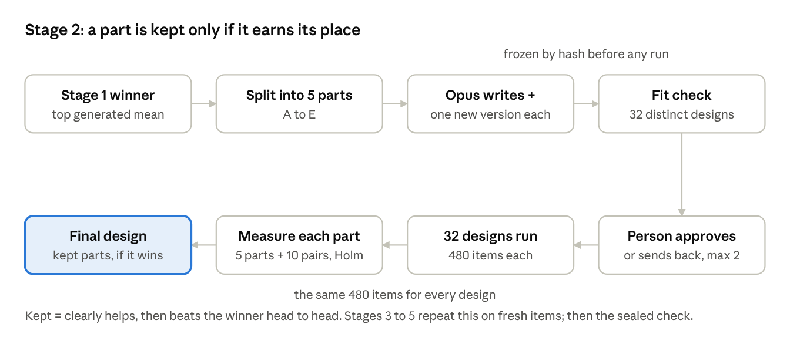
A child is cut at the screens only when it is clearly behind the champion on the same items; close calls go on. The full test ranks the survivors, but it does not crown anyone: that takes two further tests on items no design was ever chosen on (section 04).
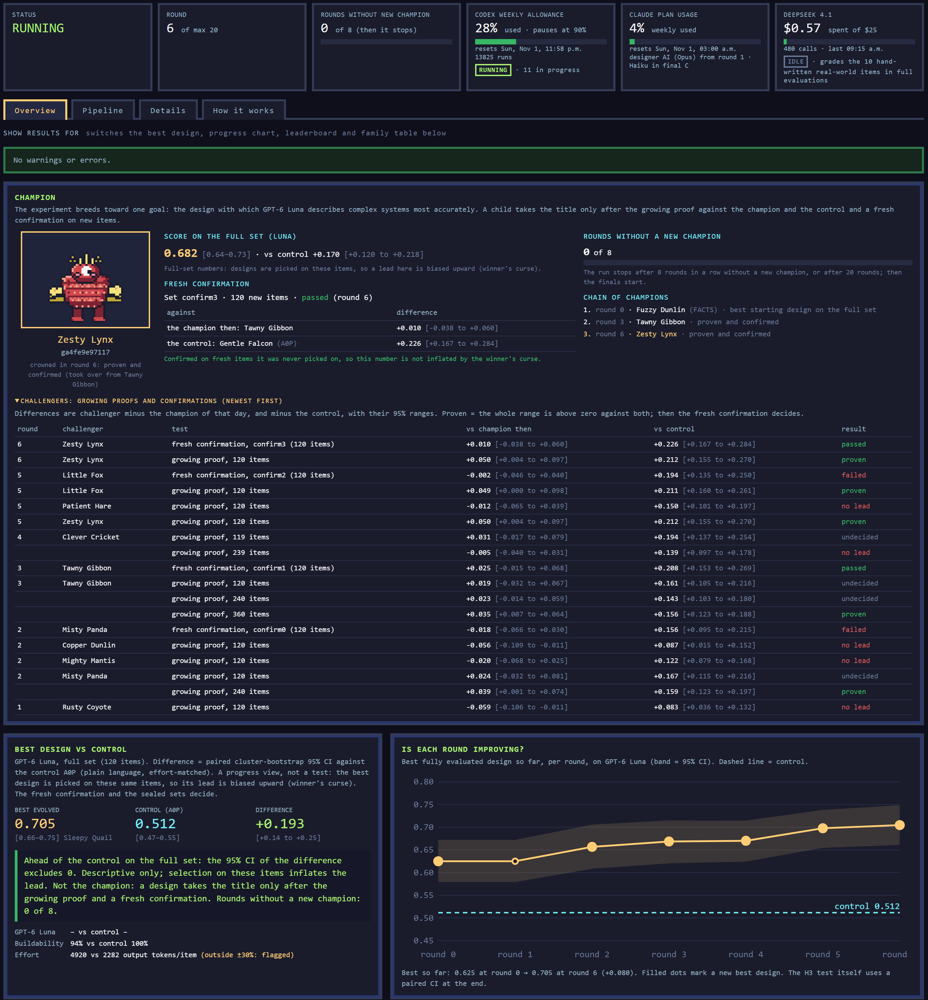
Figure 6 — Watching it run. The engine reports to a live dashboard. Shown after round 6: the champion, Zesty Lynx, every growing proof and fresh confirmation so far, and the best design of each round against the control. [TO FILL at the end of the run: replace with the final dashboard.]
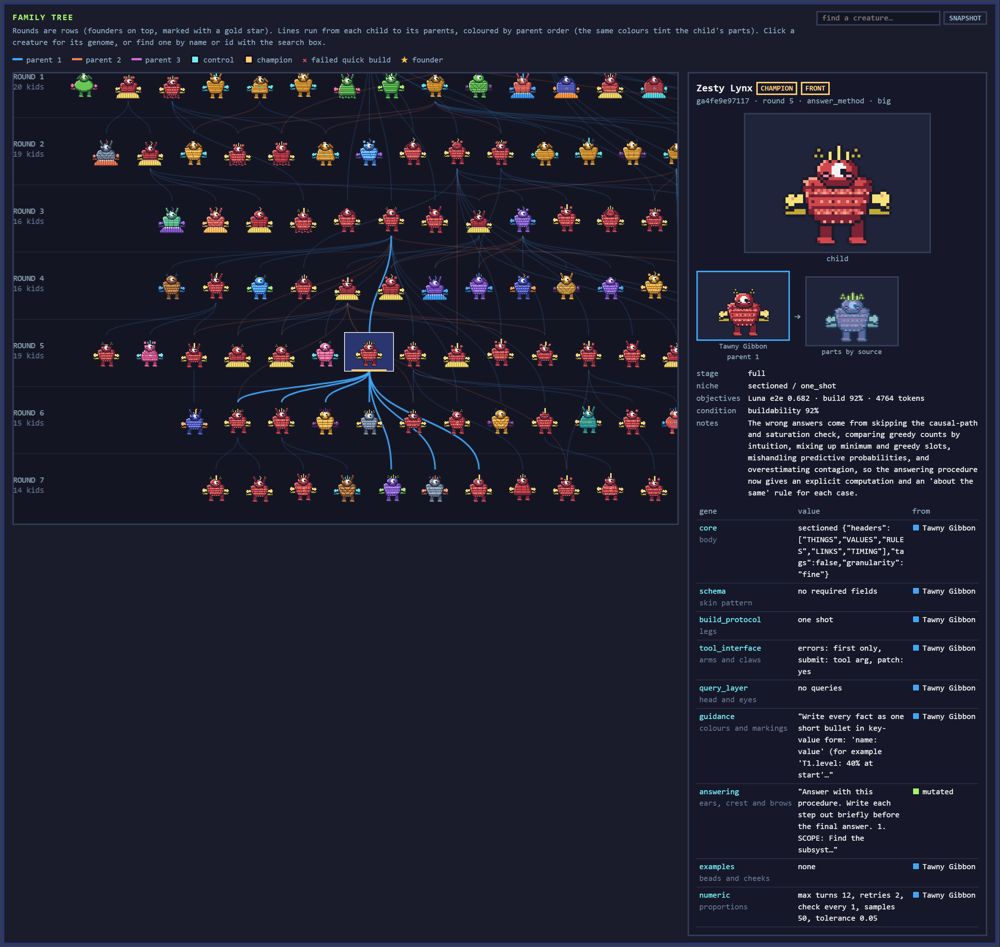
Figure 7 — A creature is its genes. The champion, Zesty Lynx, in the family tree: the lines run to its parent and its children, and the panel lists its nine genes and where each came from. Every gene is Tawny Gibbon's except the answering gene, which mutated. Each gene draws one body part, so a design can be read at a glance. [TO FILL at the end of the run: replace with the final champion in the family tree.]
04How we kept it honest
The best of many designs always looks better on the items used to pick it than it really is. This is the winner's curse, and in this run it is not a footnote: it decided two rounds. Every safeguard below exists to tell real improvement from luck.
Two tests on fresh items before any crowning. The growing proof compares the challenger with the champion and the control on 120 items no design was chosen on, growing to 240 and 360 while undecided. Proven means the whole 95% range of its lead is above zero against both. Then the fresh confirmation tests it once on 120 brand-new items: its average must beat both again.
One confirmation per round. Every confirmation is another chance to crown a fluke, and each fresh set is used once and then retired. Other proven candidates wait in a queue and are proven again against the champion of the day.
Same items, paired statistics. Designs are compared on identical items with a bootstrap that groups items by their base system, so item difficulty cancels out.
A fixed control. Every claim is measured against plain-language notes (A0P) on the same items.
Locked rules. Hypotheses, rules, item sets and code were written down and hash-locked before round 0. The engine refuses to run if a locked file changes; every later change is a numbered, dated decision.
Sealed finals. The final test sets are unreadable by any AI, the designer included, until evolution ends and the champion is named.
The designer never sees what decides a round. It learns from eight practice items that never count toward any score.
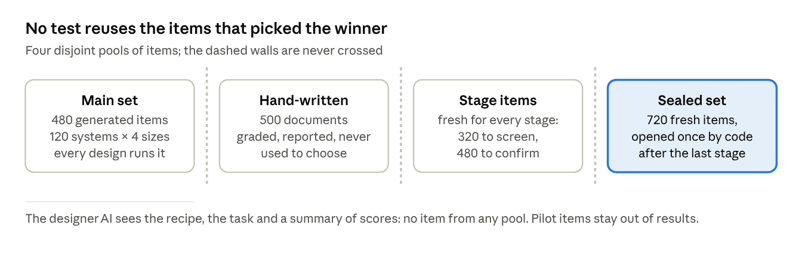
How much noise there is. On 120 items, the 95% range of a difference between two designs is about ±0.045 wide. A true gain smaller than about 0.03 cannot be told apart from noise even at 360 items. That is why the gains this paper reports are modest and why the tests are strict: they are the price of believing them.
The safeguards earned their keep. Little Fox led Tawny Gibbon by +0.029 on the full test and by +0.049 on 120 fresh items, then scored level (−0.002) on its confirmation. Clever Cricket led by +0.031 at 119 fresh items and fell to −0.005 at 239. Without the second and third tests, both would have been crowned.
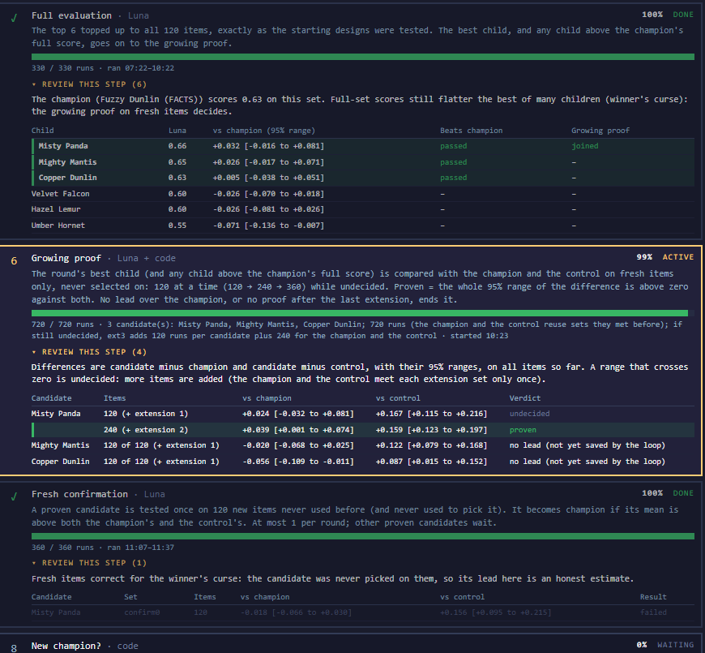
Figure 9 — The winner's curse, caught on the dashboard. Round 2: Misty Panda led the full test and passed the growing proof on 240 fresh items, then lost to the champion on its fresh confirmation.
05The run at a glance
Two of the first six rounds produced a new champion, and both winners changed only how the model answers from its notes. The table follows the run round by round, from the reader's side: what the engine tried, where its best child came from, what happened to it on fresh items, and what the round taught. Scores are on the 120-item main set; differences are against the champion of the day.
| Round | Funnel: bred → quick test → screen 1 → screen 2 → full test | What the engine tried | Best child, and where it came from | Fresh-item verdict | Champion after | What we learnt |
|---|---|---|---|---|---|---|
0 | 9 founders | Nine formats from research and AI tools, plus the plain-language control | FACTS, compact key-value facts: 0.625 (control 0.512) | – | FACTS | Format alone is worth a lot: +0.113 over plain language before any evolution |
1 | 20 → 19 → 9 → 5 → 5 | First fixes from report cards; three redesigns adding pre-worked result sections; crosses of FACTS with three other founders | Rusty Coyote, FACTS with SEC_A1's build order: 0.619 (−0.006) | No lead: −0.059 on 120 | FACTS | Borrowing parts from weaker families made FACTS worse |
2 | 19 → 19 → 15 → 13 → 6 | The first new answering procedures; crosses with retuned budgets | Misty Panda, FACTS notes plus an answering procedure (find the subsystem, collect its facts, compute, check): 0.657 (+0.032) | Proven on 240 (+0.039), then failed confirmation (−0.018) | FACTS | The route is found: keep the notes, change the answering. The first lead lost on new items |
3 | 16 → 16 → 13 → 13 → 6 | More answering procedures, on FACTS and on the near-winners; budgets transplanted from Hazel Lemur | Tawny Gibbon, FACTS notes plus a new answering procedure (recompute instead of guessing, compare both what-if options, then check): 0.669 (+0.043) | Proven on 360 (+0.035), confirmed (+0.025) | Tawny Gibbon | One gene, the answering instructions, gave the first confirmed improvement |
4 | 16 → 16 → 10 → 10 → 6 | Answering procedures on other note layouts; Little Magpie, an eight-section redesign with pre-worked results | Clever Cricket, an answering procedure on Zesty Koala's state-machine notes: 0.670 (+0.002). Little Magpie cut at the first screen (0.38) | No lead: +0.031 at 119, −0.005 at 239 | Tawny Gibbon | The fifth redesign that adds sections failed. Clever Cricket reinvented Tawny's procedure on its own |
5 | 19 → 19 → 12 → 12 → 6 | Answering procedures from the champion; crosses of near-winners from the shelf | Little Fox (0.698, +0.029) and Zesty Lynx (0.682, +0.013): Tawny's notes plus a check that a what-if change can actually reach the result. Frosty Ferret, Misty Panda × Clever Cricket, faded from +0.015 to −0.027 | Both proven on 120 (+0.049, +0.050). Little Fox failed confirmation (−0.002); Zesty Lynx queued | Tawny Gibbon | Three children beat the champion's score, yet none was crowned: the winner's curse twice over. Answering procedures only work on the notes they were written for |
6 | 15 → 15 → 11 → 10 → 6 | Answering procedures on the new leaders; crosses of Zesty Lynx with Clever Cricket's budgets; simplified layouts | Sleepy Quail, Zesty Lynx's notes plus stricter rules for capacities and time tables: 0.705, the run's top score. Swift Ocelot, Zesty Lynx × Clever Cricket: 0.694, the best cross so far | Zesty Lynx, first in the queue: proven, then confirmed (+0.010) | Zesty Lynx | The second confirmed step. The queue gave Zesty Lynx the round's one confirmation; Sleepy Quail was never reached |
7 | 14 → 14 → … | Running | [TO FILL] | [TO FILL] | [TO FILL] | [TO FILL] |
Three patterns run through the table. First, every crowned design and every proven one is a single-gene change to the answering instructions; the notes layout of FACTS survived all six rounds. Second, combining parents got close but never won: the best cross, Swift Ocelot, reached 0.694 in round 6. Third, every attempt to make the notes richer, with more sections or results worked out in advance, failed early, most likely because the small model got the working wrong while writing and stored its mistakes as facts.
The full record of every round, every child and every decision is published with the code (Appendix B).
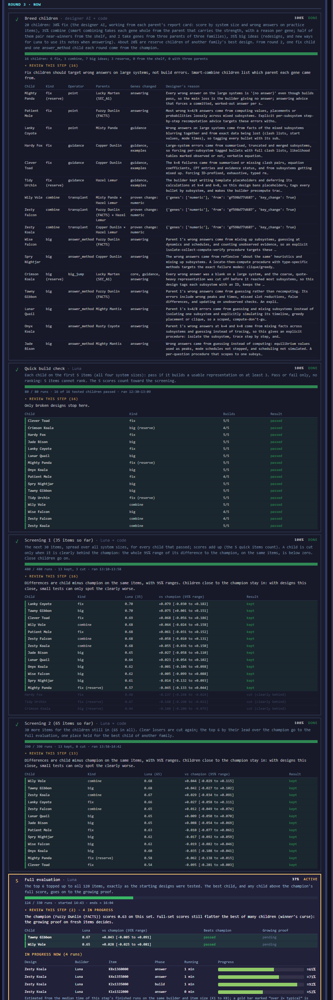
Figure 10 — One round, step by step. Round 3 on the dashboard, from breeding to the full test: every child, every screen and who moved on. Round 3 crowned Tawny Gibbon.
06What evolution found
Evolution kept the notes and rewrote the thinking. Both new champions are FACTS's notes, unchanged, with one gene replaced: the instructions for how the model answers from its notes. Each was written by the designer AI from the parent's report card of wrong answers, and each turned a vague habit (guess, eyeball, assume) into a procedure the model can follow.
| Champion | Crowned | What changed | Main set | Evidence on fresh items |
|---|---|---|---|---|
FACTS (Fuzzy Dunlin) | Round 0 | Starting design: compact key-value notes under THINGS, VALUES, RULES, LINKS, TIMING; no answering advice | 0.625 | Best founder; +0.113 over plain language |
Tawny Gibbon | Round 3 | Answering gene only: a four-step procedure, scope, recompute, compare, answer | 0.669 | Proven +0.035 [+0.007, +0.064] on 360; confirmed +0.025 |
Zesty Lynx | Round 6 | Answering gene only: Tawny's procedure plus a path check and sharper rules for slots, probabilities and spread | 0.682 | Proven +0.050 [+0.004, +0.097] on 120; confirmed +0.010 |
How the answering procedure grew. Read across a row to see what each generation added.
| Step | FACTS | Tawny Gibbon | Zesty Lynx |
|---|---|---|---|
Find the right part | – | SCOPE: name the one subsystem, collect only its bullets, ignore distractors | Same, and never borrow a value from a similarly named entity |
Can the change matter? | – | – | PATH CHECK: trace the chain of links from the change to the asked quantity; no chain, or a capped stage on the way, means about the same |
Work it out | – | RECOMPUTE, DON'T GUESS: step time series in a table, place slots greedily, Bayes on observed checks only | Same, plus: minimum slots by trying one fewer, predictive probabilities summed over states, expected spread for contagion |
Compare | – | Compute baseline and change the same way | Call a difference only if it is clear, more than about 10% |
Answer | Answer line only | Pick the option that contains the computed number | Same |
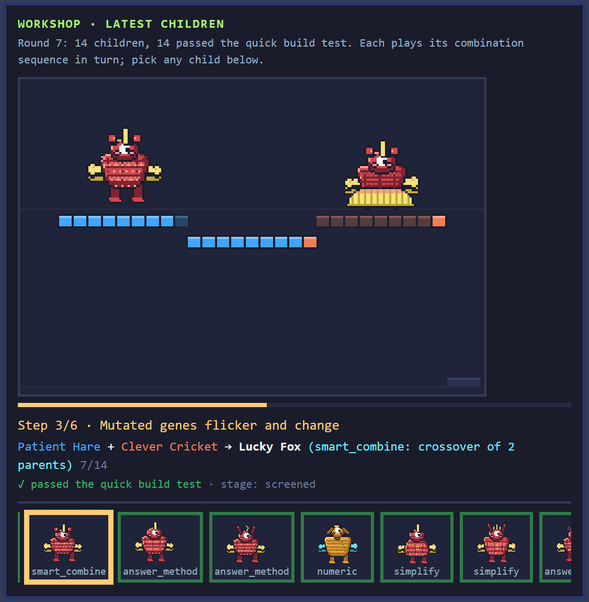
Figure 11 — Breeding, watched live. The dashboard's workshop assembles each child part by part from its parents. Here Patient Hare and Clever Cricket combine into Lucky Fox in round 7.
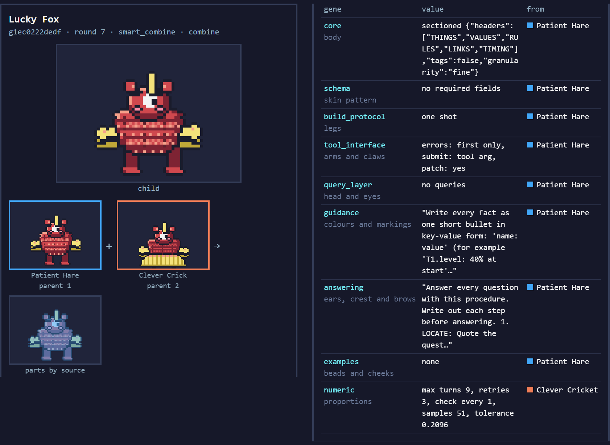
Figure 12 — Where each gene came from. Lucky Fox beside its parents, each gene labelled with the parent it came from: all from Patient Hare except the numeric budgets, from Clever Cricket.
What failed, and what it teaches.
| Attempt | How often | Result | Lesson |
|---|---|---|---|
Richer notes: more sections, results worked out while writing | 5 redesigns by round 4, more after | All cut before or at the full test; Little Magpie scored 0.38 | Most likely, a small model makes mistakes while pre-computing and stores them as facts |
Crossing FACTS with other founders' parts | Most of rounds 1 and 2 | Never above FACTS | The weaker families had little to give |
Combining two near-winners | 2 to 6 a round | Close, never crowned; best Swift Ocelot 0.694 | Combining finds good designs, but the step that won was a new idea, not a mix |
Moving an answering procedure to different notes | Frosty Ferret, round 5 | +0.015 at the screen, −0.027 on the full test | A procedure is tuned to the notes it was written for |
The FACTS family took over. By round 4 more than 80% of the children descended from FACTS, and the family alarm fired from round 4 on. Diversity was kept alive by the reserved places for other families, but the evidence pointed one way.
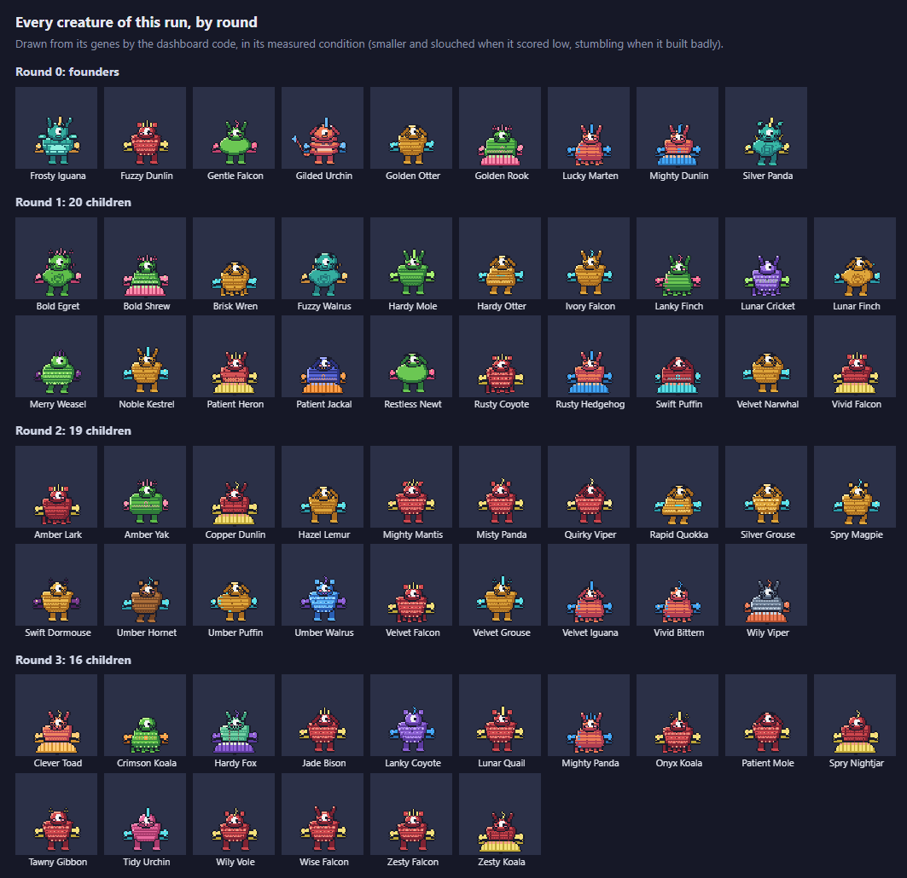
Figure 13 — Every creature, rounds 0 to 3. Each is drawn from its genes; smaller and slouched when it scored low. The red, striped FACTS line spreads from one founder to most of round 3.
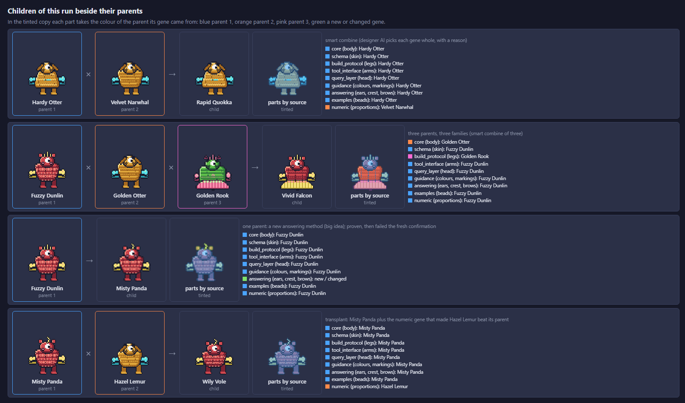
Figure 14 — Children beside their parents. Each part is tinted by the parent it came from, so a cross shows its origins at a glance.
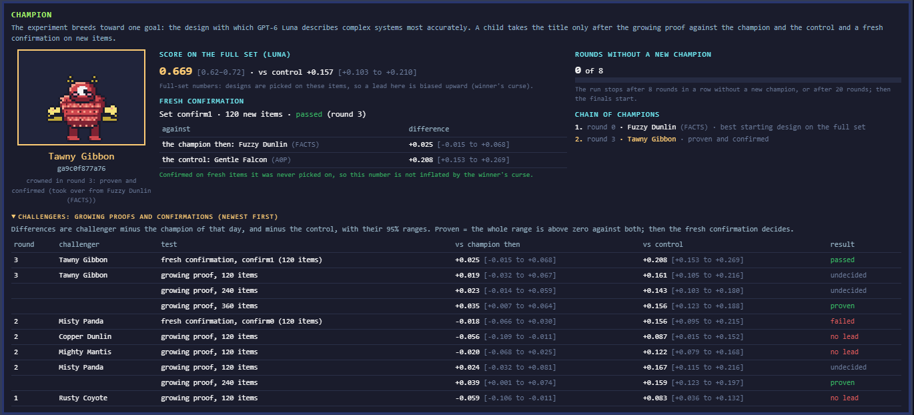
Figure 15 — A champion is crowned. The dashboard's champion panel after round 3: Tawny Gibbon, with its proof and confirmation.
07Results
The champion answers 68% of questions correctly against 51% for plain notes, and it stays ahead at every system size. Accuracy still falls as systems grow, from about 80% on one system to under 60% on eight interleaved ones. On the 10 hand-written real-world cases every design scores about a third, and structure barely helps.
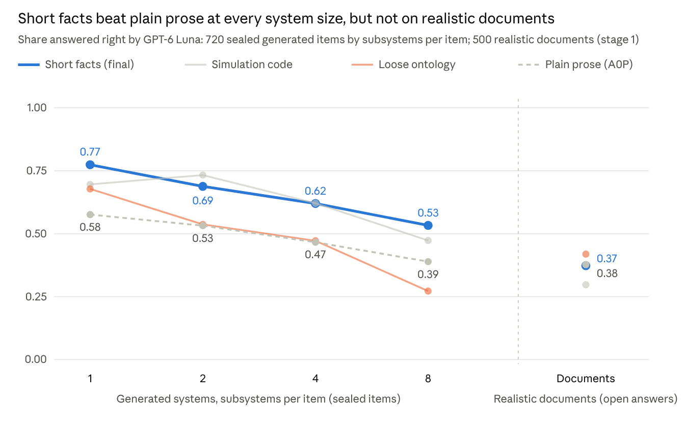
Where the gains came from, by system size. Differences on the same items, in share of questions answered correctly.
| System size | Champion vs plain notes | Champion vs FACTS (start) | Tawny Gibbon vs FACTS |
|---|---|---|---|
1 subsystem | +0.22 | −0.02 | +0.07 |
2 subsystems | +0.24 | +0.07 | 0.00 |
4 subsystems | +0.18 | +0.11 | +0.05 |
8 subsystems | +0.10 | +0.05 | +0.05 |
Hand-written (10 items) | +0.02 | +0.07 | +0.02 |
All 120 items | +0.17 | +0.06 | +0.04 |
Evolution's gains came mostly from the middle and large systems (2 to 8 subsystems), where the answering procedure keeps the model inside the right part of the system and makes it compute rather than guess. On a single system, FACTS already did well. The lead over plain notes narrows as systems grow: at eight subsystems the champion still loses track of more than four questions in ten.
Accuracy and cost.
| Design | Score | Notes that built correctly | Output tokens per item |
|---|---|---|---|
Zesty Lynx (champion) | 0.682 [0.638, 0.725] | 92% | 4,764 |
Tawny Gibbon | 0.669 [0.620, 0.715] | 89% | 4,722 |
FACTS (start) | 0.625 [0.579, 0.672] | 89% | 5,480 |
Plain notes (A0P) | 0.512 [0.470, 0.555] | 100% | 2,282 |
The champion uses about twice the output of plain notes, mostly in writing out its working before it answers, and slightly less than FACTS, whose notes were longer. At the builder's API price (about $0.50 per million output tokens) that is a quarter of a cent per item. Selection ran on accuracy alone, so any gain bought with extra tokens is visible here.
The finals
When evolution stops, the champion is locked in and the sealed sets are opened once. Each clause of the hypothesis is tested separately, so a mixed result is a legitimate result.
| Hypothesis | Test | Champion minus control (95% range) | Result |
|---|---|---|---|
H1 | Accuracy on the sealed sets, pooled, Luna, 3 repeats | [TO FILL] | [pass / fail] |
H7 | The lead is larger at 8 subsystems than at 1 | [TO FILL] | [pass / fail] |
H8 | Better when one system is built up over four turns (final B) | [TO FILL] | [pass / fail] |
H9 | Also helps five other small models (final C), pooled and ahead on most | [TO FILL] | [pass / fail] |
Retention | Share of correct answers still correct at the next build-up turn | [TO FILL] | reported, no pass or fail |
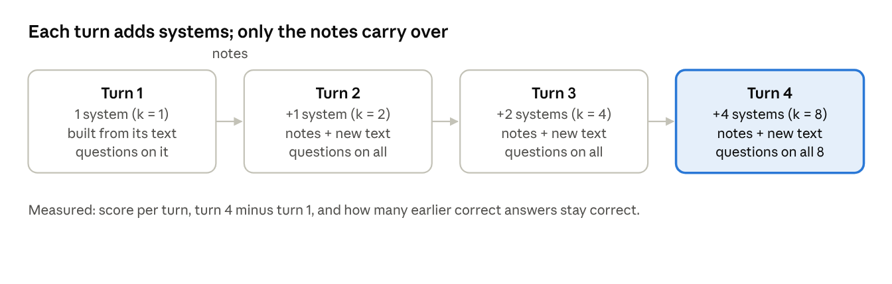
Final B is the first evidence on whether the format survives being revised turn by turn, the situation that matters for long conversations and memory (section 08). Final C runs the same items on Qwen 3.8 Flash, Gemma 4 26B, Mistral Small, gpt-oss-20b and Claude Haiku. [TO FILL after the finals: one paragraph on what the sealed results show.]
08Early indicators: does it carry over?
Three small tests, run after evolution ended, ask whether the champion's format is useful beyond the run that bred it. Final B (section 07) is the pre-registered first look at one of these questions, understanding built up over several turns; the tests below go further. They are early indicators, not full studies: a few dozen items or conversations, a handful of apps, a few repeats each. Each reports the direction and size of a difference with its 95% range, and its prediction was written down before it ran. A clear signal earns a full study; a flat one is reported as flat. Claude models are included where they fit, as a second model family. [TO FILL: dates run and sample sizes.]
| Test | The question | Arms | Models | Prediction written down first |
|---|---|---|---|---|
1. Size ladder | Does what works for Luna also help bigger models, and Codex? | Plain notes (A0P); FACTS notes; champion notes alone; champion notes plus its answering procedure | Luna, a mid-size and the full model of its family, Codex; Claude Haiku, Sonnet and Opus | The gain over plain notes shrinks as models grow, but stays above zero at 8 subsystems |
2. Compression | Is the champion's format a better way to compress a long conversation for a small model? | A frontier model's normal summary; the champion's format; a hand-made summary layout (request, facts, decisions, errors, open tasks) | Writer: a frontier model (Claude Opus, beside a GPT model). Readers: Luna and Claude Haiku | [TO FILL before running] |
3. App build | Do apps built from the champion's format pass more hidden tests? | Champion format; an industry-standard spec; the prose brief, at similar lengths | Builder: Luna, a small coding model. Reference: full Codex and Claude Code. Optional: Claude Haiku | [TO FILL before running] |
Why notes and answering are split in test 1. The answering procedures were bred to fix Luna's own mistakes. A bigger model may not make them, and a fixed procedure could slow it down, so the notes are tested with and without it.
How test 2 is scored. There is no length budget: each arm compresses as it naturally would, its compression ratio (notes length over conversation length) is reported beside its score, and the question is which arm scores higher. The questions include facts corrected later, decisions with their reasons and open tasks, which the champion's five sections have no place for, so it can lose where it should.
How test 3 is scored. Hidden acceptance tests run by a script, several builds per app and arm. Failures are split into two kinds: a requirement missed or misread (the spec's fault, which is what is tested) and code that does not run (the builder's fault, whatever the spec).
Results
| Test | Result | 95% range | Reading |
|---|---|---|---|
1. Size ladder | [TO FILL] | [TO FILL] | [TO FILL] |
2. Compression | [TO FILL: score and compression ratio per arm] | [TO FILL] | [TO FILL] |
3. App build | [TO FILL: hidden tests passed per arm, by failure kind] | [TO FILL] | [TO FILL] |
09What can be improved
The run shows that evolution improves on the best hand-made format for one small model on generated systems. How far that reaches is first tested by the finals (section 07) and the early indicators (section 08). The table sets out, area by area, what was tested, what was not, and what the next run should change. Every row is something we saw in this run, not a general caveat.
| Area | What this run tested | What it did not test, or did weakly | Opportunity |
|---|---|---|---|
Real-world cases | 10 hand-written cases in every full test | 10 cases are 8% of the score, so selection barely saw them; every design scores about a third, and four of them (S01, S10, S15, S19) defeat every design | Weight real cases more, write many more of them, and study why those four defeat everything |
Size of the gains | Two confirmed steps, +0.035 and +0.010 against the champion of the day | The proof cannot detect a true gain much below 0.03, even at 360 items; the second step's confirmation range includes zero | Larger fresh sets for close calls; a direct champion-vs-FACTS check on the same fresh items |
The method itself | Evolution against the best hand-made design | No baseline for the search: a single lineage improved step by step (as in Karpathy's autoresearch loop), or simply asking the designer for its best design many times | Run those baselines on the same budget and items |
Near-twin candidates | One confirmation per round, queue first | Little Fox and Zesty Lynx are near-twins; which got crowned depended partly on which fresh set each drew. Sleepy Quail, the top score (0.705), was never tested | A head-to-head on shared fresh items when proven candidates are near-twins; let a strong child queue even after a crowning |
Model | GPT-6 Luna only, during evolution | Whether the format suits other models is left to final C and the size ladder (section 08) | Breed against several builders at once, so the winner is not tuned to one model's mistakes |
Problem domain | Generated systems in seven families, 1 to 8 interleaved | Conversations, specifications, policies; any length limit on the notes | Problem packs for conversation memory and app specs; a length objective |
The designer AI | Claude Opus, from report cards of one parent | It sees no history of what was tried and failed, so it repeated ideas: five note redesigns with pre-worked results all failed | A bounded lab notebook of past attempts; Fable and Opus as two designer arms |
Diversity | Reserved places for other families; an alarm above 70% | The FACTS family made up over 80% of children from round 4; crosses between near-identical parents had little to work with | Stronger family quotas, or new founders: JSON and Markdown-table layouts |
Combining | Smart combining by gene, with reasons | No combined child was ever crowned | Combine champions' answering procedures with matching notes only |
Numeric settings | Budgets tuned by an evolution strategy | The tuning did not learn from scores; unused settings made near-copies | Tie numeric tuning to measured gains |
Speed | 12 parallel test runs; about 4 to 16 hours a round | One round is slow, so the run explores few ideas | More parallel runs within the subscription's weekly allowance |
What we will not claim. That the champion understands real systems as well as generated ones; that the format helps every model; that evolution beats every other search method. Each of these is testable, and the table says how.
10Related work
Others have compared formats by hand, tuned prompts automatically and evolved programs; this experiment evolves a whole format that the model writes before it sees any question, and proves each step on fresh items.
| Approach | Example work | What it optimises | Small-model evidence | Held-out test | Transfer across models | How this experiment differs |
|---|---|---|---|---|---|---|
Manual format comparison | How content is rendered at answer time | GPT-3.5 vs GPT-4 only | Partial | Template overlap only | Uses their findings as founders, then searches beyond them | |
Automatic prompt optimisation | APE Zhou et al., 2022; OPRO Yang et al., 2023; ProTeGi Pryzant et al., 2023; TextGrad Yuksekgonul et al., 2024 | An answer-time instruction | Mostly large API models | Partial | Not as an unchanged winner | Optimises a whole format, and the format never sees the questions |
Evolutionary prompt and program search | EvoPrompt Guo et al., 2023; Promptbreeder Fernando et al., 2024; GEPA Agrawal et al., 2025; FunSearch Romera-Paredes et al., 2024; AlphaEvolve Novikov et al., 2025 | Prompts, mutation prompts or programs | Yes: 3.5B to 8B models | Partial | No | Closest search mechanics; the candidates here are question-blind descriptions of a system |
Autonomous research loops | autoresearch (Karpathy, 2026) | A training script: an agent edits it, runs a 5-minute job, keeps the edit if validation loss improves | Yes: small models trained on one GPU | No: one validation score | Partly: changes found on a small model trained a larger one about 11% faster (as reported) | One line of descent on a near-repeatable score; this score is noisy, so a population is kept and every lead is proven on fresh items |
Pipeline optimisation | DSPy Khattab et al., 2023; MIPRO Opsahl-Ong et al., 2024 | Modules, instructions and examples of a pipeline | Yes: Llama 8B to 13B | Partial | No | Here the answer step sees only the written notes, so any gain comes from what was written down and how it is read back |
Learned prompts and compression | Prefix-Tuning Li and Liang, 2021; LLMLingua-2 Pan et al., 2024 | Model-internal vectors or a compressed copy of the context | Small compressors only | Partial | Compressor only | Produces a readable, portable format any model can use, with no training |
Structured knowledge and code | GraphRAG Edge et al., 2024; PAL Gao et al., 2022 | Graphs, structured-data interfaces, programs | Not tested | Partial | No | GraphRAG builds before questions with a fixed pipeline; here the representation itself is searched |
Agent memory | MemGPT Packer et al., 2024; Zep Rasmussen et al., 2025 | Memory tiers, retrieval | Hosted small variants only | Yes, not sealed | No | Memory systems change storage, retrieval and answering together; here the format is isolated |
Spec-driven development | Specine Tian and Chen, 2026; Kiro and Spec Kit | Requirements, designs, tests | No size comparison | Partial | No | Supplied the SPEC founder; measured on code, not on understanding a system |
Fine-tuning | Supervised fine-tuning | Model weights | Yes | Usually | No | Needs training data and model access; the result here is a format any model can use |
This experiment | This paper | A structured format of nine genes, written before any question | GPT-6 Luna; five other small models in final C | Fresh confirmation for every champion, sealed finals after a lock | The unchanged champion on five other models | The reference row |
Feature checklist. Each column is one family of related work from the table above; the last column is this experiment. ✓ = yes, ~ = partly or only in some studies, ✗ = no or not reported.
| Feature | Manual formats | Prompt optimisers | Evolutionary prompts | Autoresearch loop | Pipelines | Learned and compressed | Structured / GraphRAG | Agent memory | Spec-driven | Fine-tuning | This experiment |
|---|---|---|---|---|---|---|---|---|---|---|---|
Searches automatically for better designs | ✗ | ✓ | ✓ | ✓ | ✓ | ✓ | ✗ | ✗ | ✗ | ✓ | ✓ |
Population of candidates (evolution) | ✗ | ✗ | ✓ | ✗ | ✗ | ✗ | ✗ | ✗ | ✗ | ✗ | ✓ |
AI proposes fixes from failures | ✗ | ✓ | ✓ | ✓ | ~ | ✗ | ✗ | ✗ | ~ | ✗ | ✓ |
Combines strong candidates | ✗ | ✗ | ✓ | ✗ | ~ | ✗ | ✗ | ✗ | ✗ | ✗ | ✓ |
Optimises structure, not just wording | ~ | ✗ | ~ | ~ | ~ | ✗ | ✗ | ✗ | ✗ | ✗ | ✓ |
Representation written before the questions | ✗ | ✗ | ✗ | ✗ | ✗ | ✗ | ~ | ~ | ✓ | ✗ | ✓ |
Answers from the representation alone | ✗ | ✗ | ✗ | ✗ | ✗ | ✗ | ✗ | ✗ | ~ | ✗ | ✓ |
Readable, portable result (no training) | ✓ | ✓ | ✓ | ~ | ~ | ~ | ~ | ~ | ✓ | ✗ | ✓ |
Tested on small or open models | ~ | ~ | ✓ | ✓ | ✓ | ~ | ✗ | ~ | ~ | ✓ | ✓ |
Held-out test set | ~ | ~ | ~ | ✗ | ~ | ~ | ~ | ~ | ~ | ✓ | ✓ |
Fresh confirmation of the winner | ✗ | ✗ | ✗ | ✗ | ✗ | ✗ | ✗ | ✗ | ✗ | ✗ | ✓ |
Sealed final test after a lock | ✗ | ✗ | ✗ | ✗ | ✗ | ✗ | ✗ | ✗ | ✗ | ✗ | ✓ |
Pre-registered rules | ✗ | ✗ | ✗ | ✗ | ✗ | ✗ | ✗ | ✗ | ~ | ✗ | ✓ |
Winner tested unchanged on other models | ~ | ✗ | ✗ | ~ | ✗ | ~ | ✗ | ✗ | ✗ | ✗ | ✓ |
Retention over a multi-turn build-up | ✗ | ✗ | ✗ | ✗ | ✗ | ✗ | ✗ | ✓ | ~ | ✗ | ✓ |
System size varied (complexity ladder) | ✗ | ✗ | ✗ | ✗ | ✗ | ✗ | ✗ | ✗ | ✗ | ✗ | ✓ |
Winner explained by its lineage | ✗ | ✗ | ~ | ~ | ✗ | ✗ | ✗ | ✗ | ✗ | ✗ | ✓ |
Ratings summarise the studies cited for each family; the autoresearch column is rated from its repository's description. No family has every feature, and three (fresh confirmation of the winner, a sealed final after a lock, a complexity ladder) were not found in any of them; the only pre-registration found is a study protocol without results yet (Rosa et al., 2026). Several of this experiment's ticks (sealed finals, transfer, multi-turn retention) are designed in and reported in section 07 once the finals run.
11Conclusion and what comes next
Evolution works for this problem. Starting from the best format published research had to offer, a rule-bound genetic algorithm found two improvements in six rounds, and each one survived tests designed to catch luck. The improvements are modest, a few points of accuracy each, and both came from teaching the model how to use its notes rather than from changing the notes. [TO FILL after the finals: whether the champion's lead holds on the sealed sets, grows with system size, survives a four-turn build-up and carries over to other small models.]
What to do with it today.
| If you… | Do this |
|---|---|
Brief a small model about a system | Use the prompt card in Appendix A: write the system as key-value facts under THINGS, VALUES, RULES, LINKS, TIMING, then answer with the five-step procedure |
Work with large or tangled systems | Keep each request small, build the system up in steps and check each step; at eight interleaved parts even the champion gets four answers in ten wrong |
Need real-world reliability | Use a frontier model, or check the small model's answers: on hand-written cases no format did much better than plain notes |
Want the best format for your own model | Run the method, not the format: the engine finds and proves a winner for whatever model and problem it is given |
The method may matter more than the format. Formats will date as models change. A repeatable, pre-registered way to find and prove the best one for any model will not. The engine can be separated from this problem and run on others, as a general Reality Engine: a problem pack describes what a candidate is, how test cases are made and scored and what stays sealed; the loop stays the same.
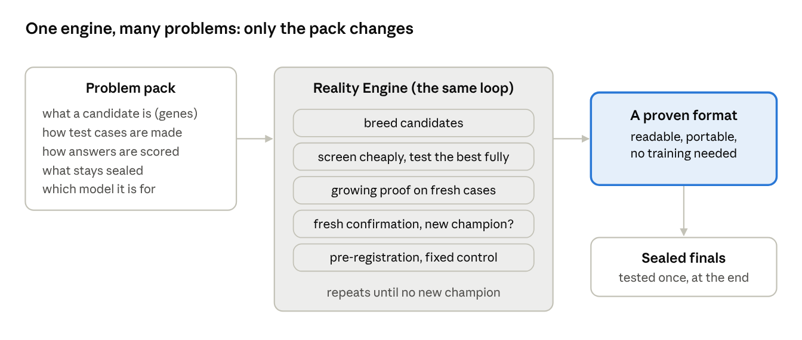
Next. The three early indicators in section 08 decide what comes first: a full study of memory compression for long conversations, app building from the format with small coding models, or a second evolution run with the improvements in section 09: a designer with a memory of past attempts, Fable and Opus as designer arms, several builders, JSON and Markdown-table founders, and more real-world cases.
Appendix AThe winning format: use it yourself
The winning format is free to use, with no training and no tools: write the system as key-value facts under five headings, then answer with a five-step procedure. This appendix shows the champion at the time of writing, Zesty Lynx (id ga4fe9e97117), crowned in round 6. [TO FILL at the end of the run: replace with the final champion if it changes.]
A.1 How to write the notes
Write the system under exactly five headings, one fact per bullet, each bullet in key-value form.
Write the headings as
## THINGS,## VALUES,## RULES,## LINKS,## TIMING, with at least one bullet under each.THINGS: every part, actor, store, signal and counter, one per bullet:
name: what it is.VALUES: every number, with units: starting levels, limits, rates, targets, thresholds.
RULES: every condition and behaviour, one per bullet: when this, then that.
LINKS: every effect of one part on another:
a -> b: relation.TIMING: order of updates, delays, cycles, start and end of the period.
No prose, no repetition, nothing outside the sections.
A tiny example for a two-tank system:
## THINGS
- T1: upper water tank
- P1: pump feeding T1
## VALUES
- T1.level: 40% at start
- T1.capacity: 500 litres
- P1.rate: 20 litres per minute
## RULES
- P1 stops when T1.level reaches 90%
## LINKS
- P1 -> T1: fills
## TIMING
- run: 60 minutes, updated every minuteA.2 How to answer from the notes
This is the gene evolution changed twice. Zesty Lynx's answering procedure, in full:
Answer with this procedure. Write each step out briefly before the final answer.
1. SCOPE: Find the subsystem the question asks about by matching entity names, such as Plot N, surge protocol, taxis, Account N or members. Collect every bullet about that subsystem from all sections, and only from that subsystem. Never borrow a value from a similarly named entity in another subsystem. Ignore distractor facts.
2. PATH CHECK (every what-if): Write the chain of links from the changed thing to the asked quantity.
- If no chain exists, the answer is 'about the same'. An example is a taxi transfer rate that does not feed trains in transit.
- If the chain passes through a capped or saturated stage, the change is absorbed and the answer is 'about the same'. Examples are a fixed fleet of 4 drivers or 9 carriages, a full stock, or a cap.
- Otherwise go to step 3.
3. RECOMPUTE BASELINE AND CHANGED CASE with the same method. Do not guess.
- Time series: Step from the initial values at the stated step size. Keep a small table and read the answer from it.
- Greedy slot placement: List the clash pairs. Place items in the listed order, giving each the lowest slot not held by a clashing earlier item. Count the slots for the baseline, for option A and for option B, each separately. If A and B give the same count, answer 'about the same'. Pick A or B only if its count is strictly larger.
- Minimum slots after removing a clash: Find the largest group in which every pair clashes. Then try to place all items in one fewer slot with the clash removed. If that works, answer 'lower', even if the greedy order would not find it. Answer 'about the same' only if another equally large all-clashing group remains without that pair.
- Hidden state: Posterior = prior x the likelihood of each OBSERVED check, normalised. Use (1-p) for an 'off' reading and skip unchecked indicators. Show the four posterior numbers.
- For 'probability indicator X would be on if checked': compute the sum over states of posterior(state) x P(X on | state). Do not use the prior or the raw likelihood.
- Changing an unchecked indicator's likelihood changes nothing.
- Contagion and stochastic spread: Estimate the expected new cases per step as (affected) x (susceptible contacts) x (catch probability), minus recoveries.
- Account for recovery, immunity and limited contacts. Spread is usually slower and smaller than the worst case.
- Do not answer 'reaches N' with 90% or more unless even the average path clearly reaches N early.
- For 'currently affected at the end', check two cases. If the outbreak usually dies out early, or everyone ends up recovered, immune or saturated, small changes give 'about the same'. Small changes include one immune account or a modestly different catch probability.
- Queues, stocks and damage: Simulate event by event using mean rates.
4. DECIDE: Answer 'higher' or 'lower' only if the two computed numbers differ clearly, by more than about 10% or more than rounding. Otherwise answer 'about the same'.
5. ANSWER: Pick the option or range that contains your computed number. Do not choose by intuition.Some rules are specific to the kinds of systems in the tests (slots, contagion, hidden states). For your own systems keep steps 1, 2, 4 and 5 as they are, and replace step 3 with the calculations your system needs.
A.3 The prompt card: copy and paste
Use it in two messages. Message 1 builds the notes; message 2, in a fresh chat with only the notes, asks the questions.
MESSAGE 1 (build)
You are an expert analyst. Describe the system below as a document under exactly these headers, each written as a line: ## THINGS, ## VALUES, ## RULES, ## LINKS, ## TIMING, each followed by at least one bullet.
Write every fact as one short bullet in key-value form: 'name: value' (for example 'T1.level: 40% at start') or 'a -> b: relation' (for example 'P1 -> T1: fills'). One fact per bullet, no prose, no repetition. Put each fact under the section it belongs to. No other headers and no text outside the sections.
Capture everything a later question might need: the parts, their states and values, the rules, conditions and timing. The description will not be available when the questions are asked.
SYSTEM DESCRIPTION:
<paste your system description here>
MESSAGE 2 (answer, new chat)
Answer the questions using only this representation of the system.
<paste the answering procedure from A.2>
REPRESENTATION:
<paste the document from message 1>
QUESTIONS:
<your questions>In the experiment the builder also had tools that check the document and list problems by line number; the card above is the no-tools version for any chat AI.
A.4 The genome
Zesty Lynx's nine genes as the engine stores them. The answering gene is the procedure in A.2.
{
"core": {"kind": "sectioned",
"params": {"headers": ["THINGS", "VALUES", "RULES", "LINKS", "TIMING"],
"tags": false, "granularity": "fine"}},
"schema": {"fields": []},
"build_protocol": {"kind": "one_shot", "params": {}},
"tool_interface": {"errors": "first_only", "submit": "tool_arg", "patch": true},
"query_layer": [],
"guidance": {"text": "Write every fact as one short bullet in key-value form: 'name: value' (for example 'T1.level: 40% at start') or 'a -> b: relation' (for example 'P1 -> T1: fills'). One fact per bullet, no prose, no repetition. Put each fact under the section it belongs to.",
"examples": []},
"answering": {"text": "<the procedure in A.2>"},
"examples": {"items": []},
"numeric": {"max_turns": 12, "retries": 2, "check_every": 1, "samples": 50, "tolerance": 0.05}
}A.5 How it writes
An excerpt of notes Luna wrote in this format for one test item: two transport and scheduling systems interleaved in one description (two subsystems). It answered every question about them correctly from these notes alone. The full document runs to 162 bullets; four lines from each section:
## THINGS
- Central station trains: bounded store.
- Service suspension: on/off state.
- Signaller: controller for central station trains.
- Circuit 1 session: session requiring one of slots 1, 2, 3, and so on.
## VALUES
- Initial central station trains: 52.
- Central station train store bounds: 0 to 120.
- Suspension switch-on threshold: peak service setting at or below 0.33.
- Signaller wait after action: 2 minutes.
## RULES
- At each minute start, suspension turns on when peak service setting is at most 0.33.
- Suspension turns off again only when peak service setting is at least 0.82.
- Each switch-on increments the suspension activations counter.
- Fare level is recalculated from the latest crowding level with zero-minute lag.
## LINKS
- Central station trains -> signaller: signaller raises trains toward target 86.
- Central station trains -> ticket hall taxis: transfers 30 percent of the train quantity present at transfer time.
- Outside -> central station trains: steady transfer at 444 per hour.
- Central station trains -> crowding level: crowding rises linearly with trains.
## TIMING
- The simulation advances minute by minute for 1260 seconds.
- Each minute begins with one-off changes.
- Rules are checked after all material movements.
- Weather and all stated causal effects use zero-minute lag, meaning the latest available value.Appendix BThe data and the code
Every result in this paper can be checked: the run's data, code and rules are published in one repository, github.com/LLMJester/describing-reality-for-ai, alongside this paper and the Reality Engine. [TO FILL: confirm when public; add the Zenodo DOI.]
| What | Where in the repository |
|---|---|
One row per test episode: design, item, system size, problem family, score, whether the notes built, output tokens, time | Run results |
Every design's genome, parents and the designer's reason for it; the family tree | Run results |
Each round's screens, growing proofs and fresh confirmations, with differences and 95% ranges | Run results |
The pre-registration, the lock hash and the dated decision log | Rules |
The engine, the item generator and its seeds, so every generated item can be regenerated exactly | Code |
The dashboard used to watch the run | Code |
The winning format, its prompt card and a script to try it with any model | The winner |
No item text, answer key or sealed material appears in this paper. The hand-written real-world items are kept back for future runs, and generated items' answer keys can be regenerated from the published seeds.